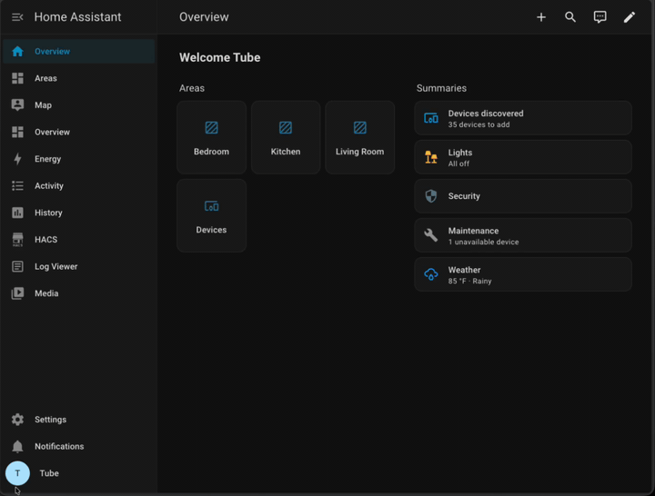

Updating to the Z-Wave Proxy Firmware
Firmware 2026.07.11.0 moves all TubesZB devices with a Z-Wave radio from the raw TCP serial stream to the native ESPHome Z-Wave Proxy. A recent zwave-js change (zwave-js#8861) breaks reconnection over serial-over-TCP streams; the proxy is the supported path going forward.
Breaking change — action required
After installing this firmware update, the Z-Wave TCP serial port is removed (6638 on Z-Wave-only kits, 6639 on Dual Radio kits). Z-Wave JS will not reconnect until you update its connection settings as described below. Plan for a few minutes of Z-Wave downtime.
Affected devices:
- Z-Wave PoE Kit (
tubeszb-zw,tubeszb-2026-zw) - Dual Radio Kits (
tubeszb-dual-radio-kit-cc2652,tubeszb-dual-radio-kit-mgm24,tubeszb-dual-radio-mgm21-2022)
Zigbee is unaffected
On Dual Radio kits, the Zigbee serial stream (port 6638) is unchanged. No Zigbee2MQTT or ZHA changes are needed.
Before You Update
- Your Z-Wave network is safe. The network (nodes, security, routing) is stored on the Z-Wave radio module itself; this firmware update does not touch it.
- Take a backup anyway (recommended). In Home Assistant go to Settings → Devices & Services → Z-Wave, and under Backup and restore select Download backup. It's free insurance.
- Note your device's IP address. You'll need it for the new connection path. A DHCP reservation is strongly recommended if you don't have one already.
- Update Z-Wave JS UI / the Z-Wave JS add-on to the latest version so it supports
esphome://connections.
Step 1 – Install the Firmware Update
- In Home Assistant, open the TubesZB device page under Settings → Devices & Services → ESPHome.
- Find the TubesZB Firmware Update entity and select Install.
- Wait for the device to flash and reboot (about a minute). The Z-Wave JS connection will drop — this is expected.
Alternative: web installer
You can also update from the device's built-in web page (http://<device-ip>) using the firmware update entity there, or flash the latest release binary from the Latest Release folder.
Step 2 – Point Z-Wave JS at the Proxy
The connection path changes from tcp://<device-ip>:6638 (or :6639) to:
esphome://<device-ip>:6053
Follow the section that matches your setup.
Home Assistant Z-Wave Integration
- Go to Settings → Devices & Services → Z-Wave.
- Select Migrate adapter (under the integration's configuration).
- In the Migrate or reconfigure dialog, choose Reconfigure the current adapter — you are keeping the same radio, only changing how it's reached.
- Select Use Socket, and replace the old
tcp://path in the Socket device path field with the new one, e.g.esphome://192.168.1.7:6053. - Submit and wait for the driver to restart.

Z-Wave JS UI (Standalone / Docker)
- Open Settings → Z-Wave in the Z-Wave JS UI web interface.
- In the Serial Port field, replace the old
tcp://path withesphome://<device-ip>:6053. - Leave your Security Keys exactly as they are.
- Click Save. The service restarts and connects through the proxy.
Step 3 – Verify
- The Z-Wave integration / control panel shows the controller as Connected, with the same Home ID as before.
- Your nodes appear with their interview status intact — no re-inclusion is needed.
- On the device's web page, the old "Z-Wave Serial Connection Status" sensor is gone; the device now reports firmware
2026.07.11.0under TubesZB ESPHome FW Version.
Troubleshooting
Z-Wave JS says the connection failed after updating its settings
: Confirm the device actually took the firmware update — check that TubesZB ESPHome FW Version on the device page (or web UI) reads 2026.07.11.0 or newer. On older firmware, keep using the tcp:// path until you update.
esphome:// is not accepted in the path field
: Your Z-Wave JS UI / add-on version predates ESPHome proxy support. Update the add-on / container to the latest version and try again.
Connected but no traffic / driver won't start : The proxy allows one client at a time. Make sure no second Z-Wave JS instance (an old add-on still running, a test container) is connected to the same device, then restart the driver.
I need to roll back
: Previous release binaries remain available on the GitHub releases page. Flash the prior version via the device web page and restore your old tcp:// settings.